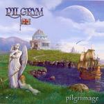

| Artist: | Pilgrym |
| Title: | Pilgrimage |
| Label: | Wellsongs/Holyground Records HDYCD04 |
| Length(s): | minutes |
| Year(s) of release: | 2004 |
| Month of review: | [09/2004] |
| 1) | Circus Of The Absurd | 7.57 |
| 2) | Ghosts Of Years | 6.01 |
| 3) | Believe Me Now | 4.52 |
| 4) | Building A Perfect Universe Part 1 | 4.44 |
| 5) | Building A Perfect Universe Part 2 | 5.02 |
| 6) | Songs Of The Albatross | 7.02 |
| 7) | Black Sun | 7.14 |
| 8) | Reborn (live; Bonus) | 6.20 |
| 9) | Circus (edit; Bonus) | 5.44 |
On Ghosts Of Years, the vocals sound somewhat far away. This is a melodic ballad, in the line of bands like Toto and Mike And The Mechanics, but less well-produced (which shoukd not be a surprise). In the middle, the guitar brings us somewhat in Oldfield territory.
Believe Me Now brings us back to the well-known symphonic bombast of say Arena. The vocal part does remind me a bit of Mike And The Mechanics again. The drums are monotonous. I get the impression this is a pomprock song, played in a more symphonic fashion. After the bridge we come the obligato guitar solo, which is quite rowdy this time.
With Building A Perfect Universe being divided into two and almost then minutes in length, the long synthy opening is no real surprise. We have time to evolve here. In fact, this is all instrumental and all electronic. Part two brings us ELPish keyboards, and the organ plays an important role as well. This is pure symphonic rock again. There are a few vocals, which seem to harken back to the opening track. Lots of echo here.
Songs Of The Albatross opens quietly with the sounds of seagulls (or are these in fact albatrosses?). In view of the title I am not surprised at the song: melancholic instrumental meanderings with a feel of the sea. Black Sun is comparable to the opener Circus Of The Absurd, and slightly dark in sound, by virtue of the organ as well as some strong synth atmospherics. Like on Circus, the vocals are rather gruff, and this fits the band well.
Reborn is the first bonus track. A slow moving track in Barclay James Harvest style with vocals totally different from leads on the album tracks. Circus (edit; bonus) is the real closer, an edit of the opener.